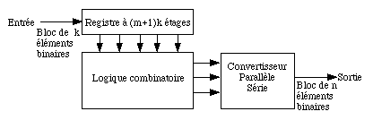
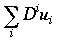
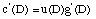
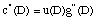
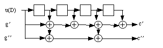
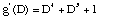
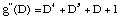

Le codage utilisé dans GSM est principalement du type convolutionnel. Les codes convolutifs constituent une seconde famille de codes correcteurs d'erreurs au moins aussi importante que les codes en blocs cycliques. Pour les codes convolutifs, chaque bloc de n éléments binaires en sortie du codeur dépend non seulement des k éléments binaires présents à son entrée mais également des m blocs précédents. Les codes convolutifs introduisent donc un effet de mémoire d'ordre m. La quantité m+1 s'appelle la longueur de contrainte du code. Le principe du codage convolutif est illustré par le schéma ci-dessous.

Un codeur est constitué d'un registre à (m+1)k étages qui mémorise les (m+1) blocs de k éléments binaires d'information, d'une logique combinatoire qui calcule les blocs de n éléments binaires et d'un convertisseur parallèle série. La quantité R=k/n est appelée rendement du code.
Le schéma du codeur utilisé dans la plupart des cas est donné ci-dessous. Il comprend essentiellement un registre à décalage (rythmé par une horloge) et des portes ou exclusif représentées par des + (ou additionneur modulo 2). Les bits d'information à coder sont présentés séquentiellement à l'entrée du registre. A chaque impulsion de l'horloge, un décalage à droite est effectué alors qu'un nouveau bit apparaît en entrée. Pour chaque bit ui en entrée, un vecteur de longueur n=2 formé des bits codés est calculé et présenté en sortie: ci=(ci',ci'').
L'entrée peut être représentée par une série formelle  , l'indice i représentant le temps ou un décompte de tops d'horloge.
Chaque sortie s'exprime alors comme le résultat de la multiplication de la séquence d'entrée par un des polynômes caractérisant le code:

,
les calculs étant effectué modulo 2.

Dans le cas particulier du GSM, le rendement est 1/2. Chaque bit codé correspond donc à une combinaison linéaire (modulo 2) des bits du registre. Les rebouclage sont spécifiés grâce à deux polynômes binaires:


qui sont représenté dans la norme par G0 et G1.
La capacité de correction d'un code convolutif est estimée à partir d'un paramètre de distance de Hamming minimale dmin. Pour le code de rendement 1/2, on peut montrer que dmin=7, c'est-à-dire que deux séquences codées diffèrent au moins de 7 positions. Ceci permet de garantir dans tous les cas la correction de 3 erreurs ou de 6 effacements.
Les codeurs convolutionnels sont a priori spécifiés pour une suite infinie de symboles d'information. Si l'information est formatée par blocs, il faut prévoir une terminaison convenable du processus de codage. Pour que les derniers bits à coder soient aussi bien protégés que les premiers, on rajoute à un bloc d'information des symboles connus qui purgent le registre en fin de codage et permettent de mettre le codeur dans un état connu (l'état tout à 0). Ces symboles (0000) sont appelés des bits de trainée (trail bits), leur nombre est égal à la longueur L du registre à décalage. La quantité L+1 est appelée la longueur de contrainte de codage. Elle est désignée par K dans la norme (ici K=5).
Dans la norme GSM, les polynôme G0 et G1 sont utilisés pour la parole ple in débit, la transmission de données à 9600 bit/s et la signalisation et le contrôle. Dans le cas de la transmission de données à des débits inférieurs ou égaux à 4800 bit/s, d'autres polynômes sont considérés dans la norme, en particulier pour renforcer le codage dans le cas des transmissions de données. Les codes résultants sont de taux 1/3 ou 1/6. Ils ont la même longueur de contrainte, et leur décodage s'appuie donc sur la même structure de treillis que pour G0 et G1. Pour la parole plein débit, aux 378 bits codés sont ajoutés 78 bits non protégés pour former un bloc de 456 bits. Dans tous les cas, mis à part pour l'accès et la synchronisation, les blocs obtenus après encodage d'erreurs sont de longueur 456 bits.